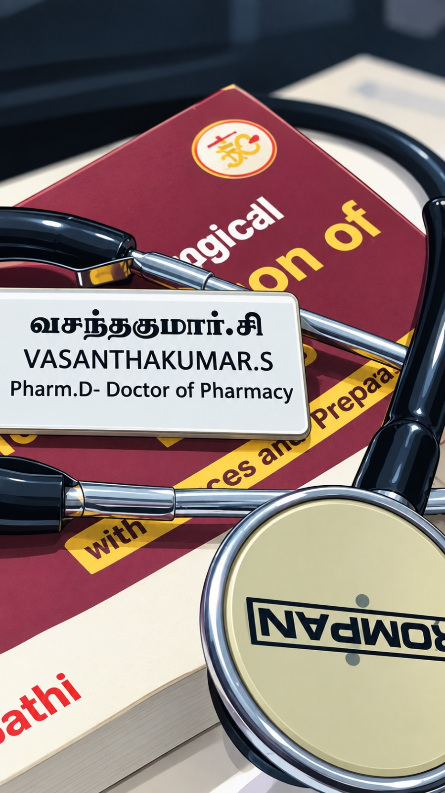

Medical & scientific writing
Articles, manuscripts, abstracts, case reports, medical documents, and reader-friendly explanations.
MEDICAL WRITING · CLINICAL PHARMACY
I’m Vasanthakumar S, a Pharm.D graduate and medical content writer. I bring clinical knowledge and careful research together to make healthcare information accurate, useful, and easy to read.
A LITTLE ABOUT ME

I’m a detail-oriented Pharm.D professional with experience across medical content, scientific writing, clinical documentation, and hospital pharmacy.
My clinical training taught me to look closely at evidence and the impact it has on people. Today, I use that perspective to research, write, and edit healthcare content that is medically sound and approachable for its audience.
My work includes research-based articles, disease and drug information, scientific documents, and patient-friendly content. From literature review and drug safety to SEO-focused health articles, I care about accuracy, clarity, and the small details that make information trustworthy.
WHAT I BRING
Grounded in pharmacy practice, shaped by research, and focused on clear communication.
Articles, manuscripts, abstracts, case reports, medical documents, and reader-friendly explanations.
Finding, evaluating, and translating scientific evidence into well-supported, structured content.
Clinical documentation, medication review, adverse drug reaction monitoring, and patient counselling.
Search-friendly content and medical communications tailored to readers and scientific audiences.
MY PROFESSIONAL JOURNEY
Guires Research & Development Pvt. Ltd. · Chennai
Healthcare content & editorial support
ESIC Hospital · Chennai
Reela Hospitals · Feb—Mar 2025
Patient monitoring, dose adjustment support, documentation, and discharge summary review.
Apollo Multispecialty Hospital, Vanagaram · Feb—Mar 2023
Prescription auditing, dispensing, patient monitoring, and medication duplication checks.
Sree Vaari Pharmacy · Feb 2022—Mar 2024
Prescription processing, dispensing, stock checks, billing, and pharmacy records.
GVK-EMRI
ACADEMIC FOUNDATION
Vels Institute of Science, Technology & Advanced Studies (VISTAS)
Pallavaram, ChennaiK. K. College of Pharmacy · Affiliated to The Tamil Nadu Dr. M.G.R. Medical University
Gerugambakkam, ChennaiCliniLaunch Research Institute (CLRI)
BengaluruHigher Secondary Education and SSLC · ERK Higher Secondary School, Dharmapuri
RESEARCH INTERESTS
Academic projects from my undergraduate and Pharm.D studies.
Examining the relationship between this antibiotic combination, antimicrobial resistance, and clinical outcomes.
A cross-sectional survey evaluating dependence and abuse related to over-the-counter drugs among adults.
LET’S CONNECT
I’m open to opportunities in medical writing, scientific communication, and clinical research.